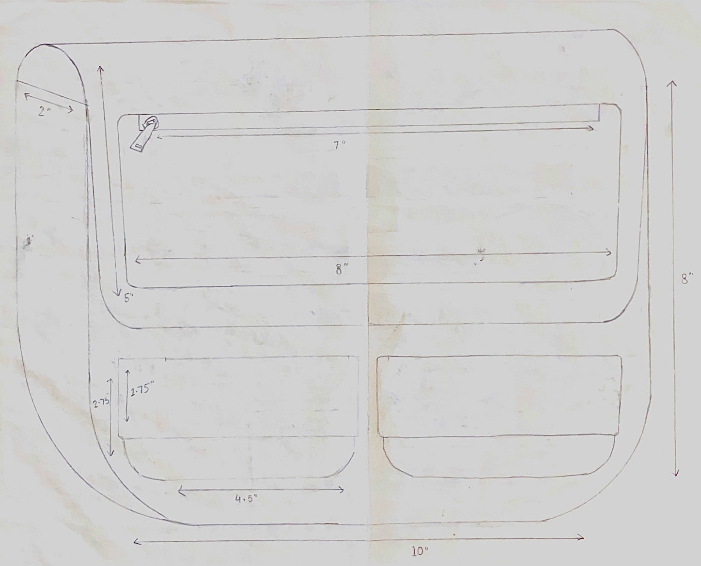
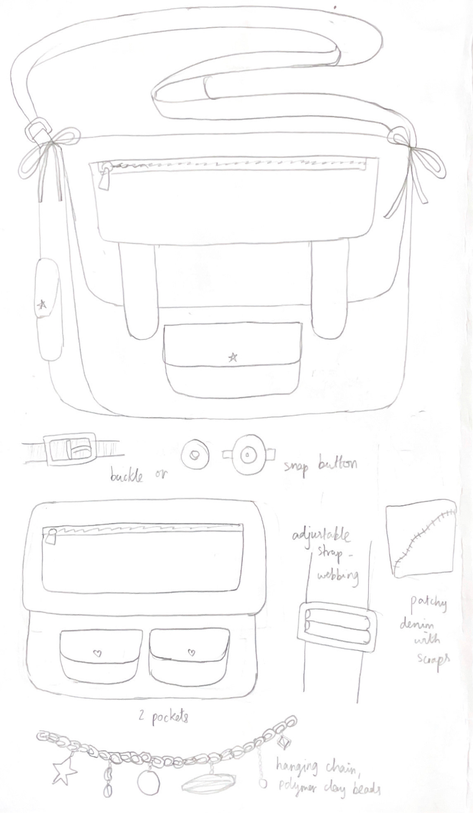
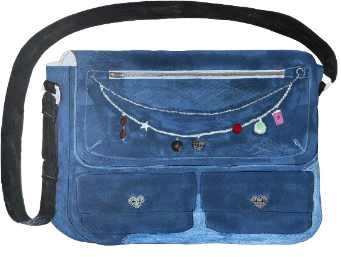

Archive
Signature

I designed and created this messenger bag during an Accessory Design course at Parsons, The New School. It is made entirely of old denim scraps, bringing new life to unused jeans and clothes from my household. The chain detail connecting the zips was also personally crafted- each charm is made of polymer clay. Essentially, this pattern can be used to make a custom bag for anyone- changing the polymer clay charms, the sizing and pins, etc., to fit the client’s personality.
Idea development


